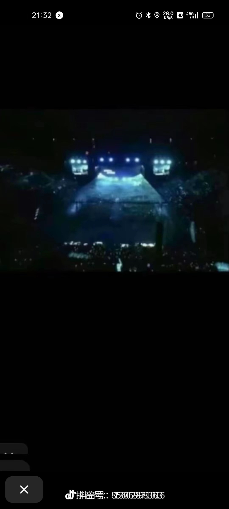
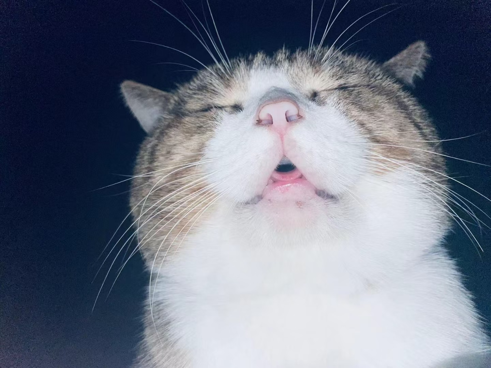
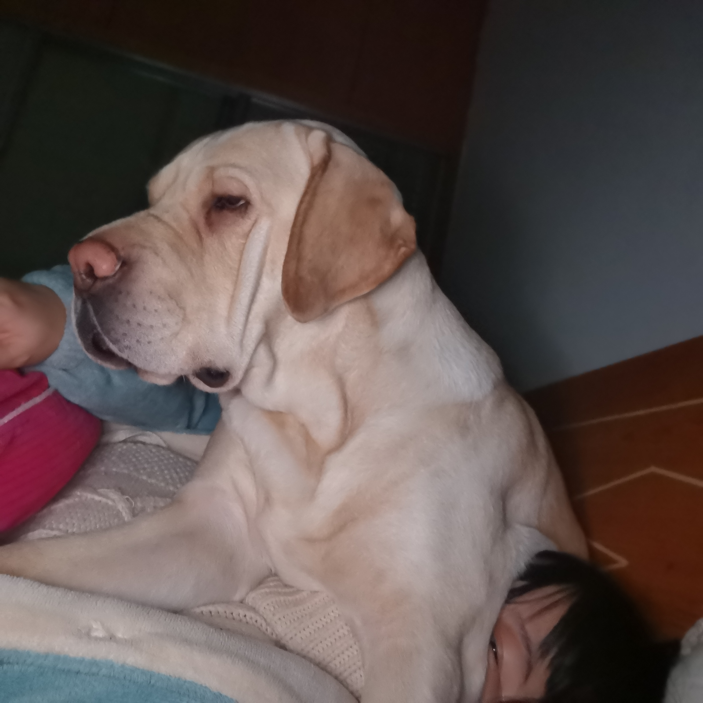
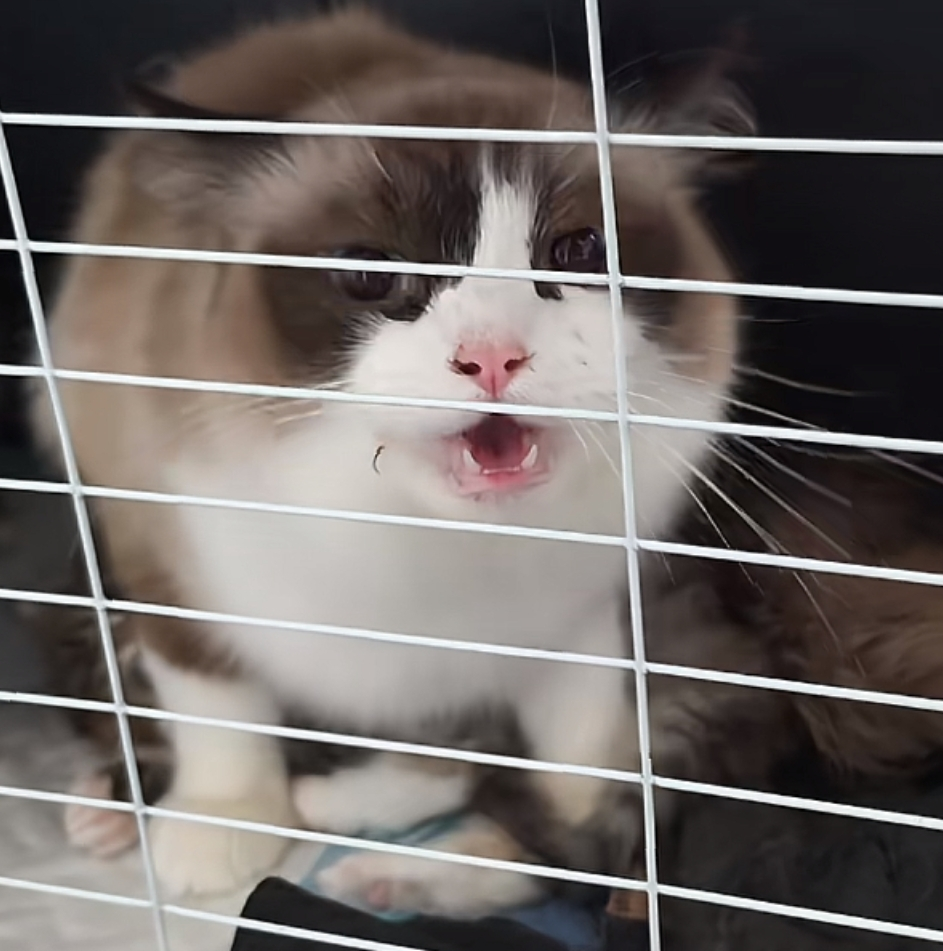
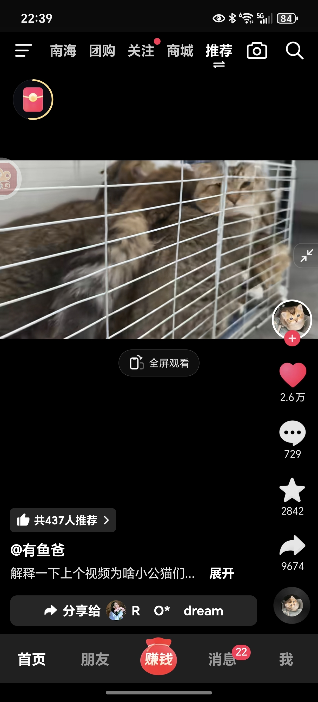
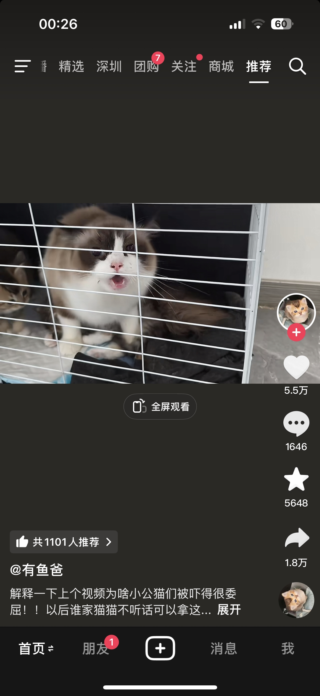
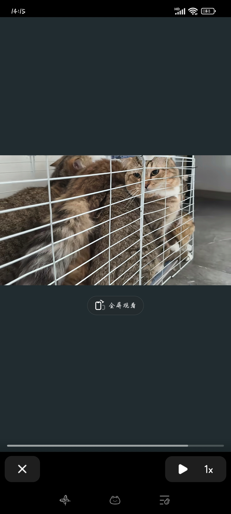

爷爷一路小跑儿解救大孙儿，并回手给男佣一个大耳雷[撇嘴]
这个年轻人真不错，能做奥运火炬手应该都不简单吧，很踏实的人[赞][赞][赞]
我觉得他是真没白活、机车、赛车、跳舞、滑板、攀岩、野外求生、唱歌、拍戏、每一项都挺热闹的、这到老了值得回味的太多了
老子坐在最后一排，就像看B超一样 
我感觉这首三大纪律八项注意每天早上应该在各级政府门口放半个小时[赞][赞][赞]
看的我一个贪官都泪流满面，这样的歌只适合干净的人唱[流泪][流泪][流泪][流泪]
三大纪律八项注意就是人民军队的立军之本[感谢]
刀郎团队太用心了！[赞] 《三大纪律八项注意》歌曲诞生于中国第一将军县→湖北黄安，红四方面军军歌； 《洪湖水浪打浪》也是经典的湖北红歌，致敬红二方面军。
听过这首歌的都60多以上以上了吧
宁静致远和花开富贵马上到达战场……
这个没法喷 全部太好看了 我去张庭那里看一下
十七:等了这么长时间，来个扣眼珠子拍脑袋的[捂脸][捂脸]
永远记住，那些都是没意义的东西，装备再好也是公家的，和你没关系，装备越好贪腐越严重。装备多的时候每周车场日你又不愿意擦了。好好上班，少看那些没用的东西。安全平安才是真理。
训练的时候，我：班长不是电动吗还练卸装干啥 班长：没电怎么办。我：那不是还能发电吗。班长：没油怎么办。
没错，又是贵州分公司的 好领导都分贵州去了 支队一级的领导全部去真火淬火 重新大练兵 特勤的车买的全是好车 所有的实用的装备，新装备全部都上马。跟着这样的领导干活，真得劲
到底是谁在制作这些音乐[捂脸][捂脸][捂脸]
就没听过重复的[憨笑][憨笑]
宝宝，不好意思打扰你 虽然你拍的这个猫猫很可爱但这个BGM其实是虐人的猫用的[流泪]
解说这活也不是所有人都能干，根本憋不住
这算不算无接触事故？
这兄弟怎么还竖起中指啊[九转大肠]
所有的冠军都拿了一遍归来仍是当打之年，太强了[赞]
这就是实力，拿完所有的冠军归来才27岁，樊振东[赞]
如果他足够圆滑，那现在的国乒还有他的一席之地，可是他棱角太明，所以只有我们在想念他了[快哭了]
该起床撒尿了[暗中观察]
有一次 半夜我热的迷迷糊糊 把脚了伸出去 我家狗舔了一下 当时魂都被吓没了[泪奔][泪奔][泪奔]
挺好的，至少不是屁股对着你嘴巴
它趴我胸口上睡觉，我打个哈气它把爪子伸我嘴里了 
他就淡淡的看着你哈哈哈哈哈哈哈哈哈
以前家里养了只高加索，掉毛半夜不睡觉一个大跳坐我身上那惨叫整个村都听得见！半夜我爸拉我上医院。肋骨都被坐裂了。它160斤足足的！
这种情况 你听我的 去离你最近的超市 买一瓶活力28的那个薰衣草洗衣液 记住一定要大瓶 然后寄给我 我的用完了 谢谢
你那个戴眼镜的娃娃差点没把人吓完了
你家狗挺好的 
真有耐心，要我醒来一摸着是狗心里瞬间踏实了，然后随手就哐哐给它两巴掌[泪奔]
没有人被狗给盯醒过吗，好几次睡着睡着，感觉有视线凑在我脸上，一睁开眼跟我家狗大眼瞪小眼[听歌]
以前觉得你俩不像，这个视频有些角度真的很像诶[泪奔]
没说你宝宝 
你是说这一堆公的害怕一只母的[泪奔] 
笑死了，还抽空安慰你一下跟你说不是凶你[泪奔][泪奔][泪奔]
开头觉得叫的那只好可怜 镜头一转 哈哈哈哈哈哈哈哈哈哈 几个毛孩子更可怜挤在一个笼子[捂脸][捂脸][捂脸]
“不是冲你嗷[比心]” 
哈哈哈哈哈给孩子吓成啥样了
妈我再也不是你的好大儿了吗？ 
母乳期的母猫就是这样，领地意识很强，是保护自己孩子的自我反应，一般不母乳了就没这个反应了，我家的也是，断奶了就好了
猫：你快把那火猫弄远一点啊，拍什么拍[发怒]
能不能给孩子们拿到另一个房间，瞅瞅给吓得[泪奔]
说了你们可能不信，我买的紫甘蓝，洗了四五六片吧，吃了一天（中间也吃翻了）第二天拉了很多（我大便正常），体重轻了近两斤。但是！我就没再吃了，那个青气味儿太难闻了[晕][晕]我这种能吃菜的人都觉得不好闻[捂脸]
杨桃那么难吃，到你嘴里怎么感觉超甜呀[九转大肠]
我觉得这种爱干净，自律的孩子是天生的，后天培养不出来[捂脸][捂脸][捂脸]
将来一定能成大事，沉稳，冷静，干净，利索[赞]
好能干，又聪明，又漂亮，又独立[赞][赞][赞]
联系林业局送回去吧，大雁也有家人
如果被我遇到，我会认为我捡到一只🦆鸭子
告诉它，今天必须表演，一会儿排成一字，一会儿排成人字
Read more: